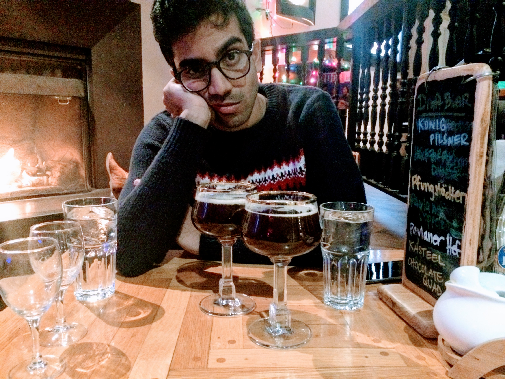

|  | hsarabu3 [at] gatech [dot] edu I am a MSCSE candidate at Georgia Tech interested in Reinforcement Learning, Mod conducting research robotics research at the Georgia Tech Research Institute and the Robot Learning Lab, Georgia Institute of Technology. My research interests include Reinforcement Learning for Uncertain Spaces, Efficient Sampling and Dimensionality Reduction for Control I worked with Dr. Mangal Kothari during my masters at IIT Kanpur. Here is my resume. If you like photography. |
Georgia Tech Research Institute
Research Assistant
February 2018 - Present
Atlanta
Perception and Planning in Highly Unstructured Environments
Collaborative Apple Picking Robots
Reduced Order Planning and Sampling
Research on collaborative arms that use surveying and servoing as canonical tasks to discover and harvest apples. Designed and implemented algorithms for full intelligence pipeline, from apple detection (custom YOLO), mapping and planning for robustness and scalability. Simulations in V-REP and experiments in real orchards using two UR5s and Realsense cameras. Leveraging and extending the idea of clear path detection (subspace planning) in contrast to expensive state of the art methods.
Exploring novel sampling techniques in conjunction with autoencoders to form smart priors on trajectories.
Robot Learning Lab, Georgia Institute of Technology
Research Assistant
September 2018 - Present
Greater Atlanta Area
Teaching a deep model to generate optimal trajectories for GT Auto Rally cars to drive in rugged-terrain using policy gradient techniques. Currently integrating a Velodyne Puck lidar (vlp6) to existing rally car platform for obstacle detection and mapping.
Project Specter, Georgia Institute of Technology
Researcher
January 2018 - Present
Greater Atlanta Area
Conceived and leading development of low-cost stereo vision guided autonomous quadrotor aircraft platform as part of the Robot Learning Lab at Georgia Tech. Implemented state estimation using Georgia Tech Smoothing and Mapping (GT-SaM) and VINS-Mono algorithms. Current focus is on Bayesian learning for high-speed way-finding in unknown environments.
Crescer Engineering
Founder
December 2015 - Present
Founded and manage consultancy accepting component design, design optimization, system analysis, onsite development, structural, and CFD analyses jobs. Modelled and implemented lap time simulator and trajectory planning algorithms for Breitling Racing team for the RedBull Air Race. Optimised flow through propulsion system of high performance watercraft. Currently supporting development future members of product family and accessories.
FMRL, Georgia Institute of Technology
Research Assistant, Fluid Mechanics Research Lab
October 2016 - May 2018
Greater Atlanta Area
Developed reduced order approximation algorithms inspired by classical machine learning techniques (PCA) tailored for turbulent flow analysis in active flow control systems. Formulated codes based on Empirical Mode Decomposition (EMD), Proper Orthogonal Decomposition and Dynamic Mode Decomposition. Authoring paper on using online EMD for turbulent flow analysis and control.
NIO
Vehicle Safety Intern
May 2017 - August 2017
San Francisco Bay Area
CFMS Group, Georgia Institute of Technology
Research Assistant, Complex Fluid Modelling and Simulation Group
October 2016 - May 2018
Greater Atlanta Area
McLaren Automotive Ltd
Passive Safety and Analysis Engineer
July 2014 - July 2015
Woking, England
ASAP Watercrafts
Mechanical Engineer - Design Analysis & Optimization
August 2014 - February 2015
Nottingham, United Kingdom
Mercedes-Benz
Diagnostics Intern
September 2012 - October 2012
Hyderabad, India
Butterfly Fields
Intern
May 2008 - May 2011
Optimal Level-k Thinking Strategies for Pacman Players
January 2017 - Present
V. R. Makkapati and P. Tsiotras
International Symposium on Dynamic Games and Applications, 2018 (Invited Talk)
Project Ghost – Hyper Range Autonomous Glider
January 2017 - Present
V. R. Makkapati and P. Tsiotras
International Symposium on Dynamic Games and Applications, 2018 (Invited Talk)
Visual Cues and Planning Strategies during Indoor Navigation
January 2017 - Present
V. R. Makkapati and P. Tsiotras
International Symposium on Dynamic Games and Applications, 2018 (Invited Talk)
Segmentation of Fan-Bones in Images
January 2017 - Present
V. R. Makkapati and P. Tsiotras
International Symposium on Dynamic Games and Applications, 2018 (Invited Talk)
Sailing Race Path Planning
January 2017 - Present
V. R. Makkapati and P. Tsiotras
International Symposium on Dynamic Games and Applications, 2018 (Invited Talk)
M.S., Computational Science and Engineering, Georgia Institute of Tech, In Progress (2019)
M.S., Mechanical Engineering, Georgia Institute of Technology, 2018
B.Eng., Mechanical Engineering, University of Manchester, 2016